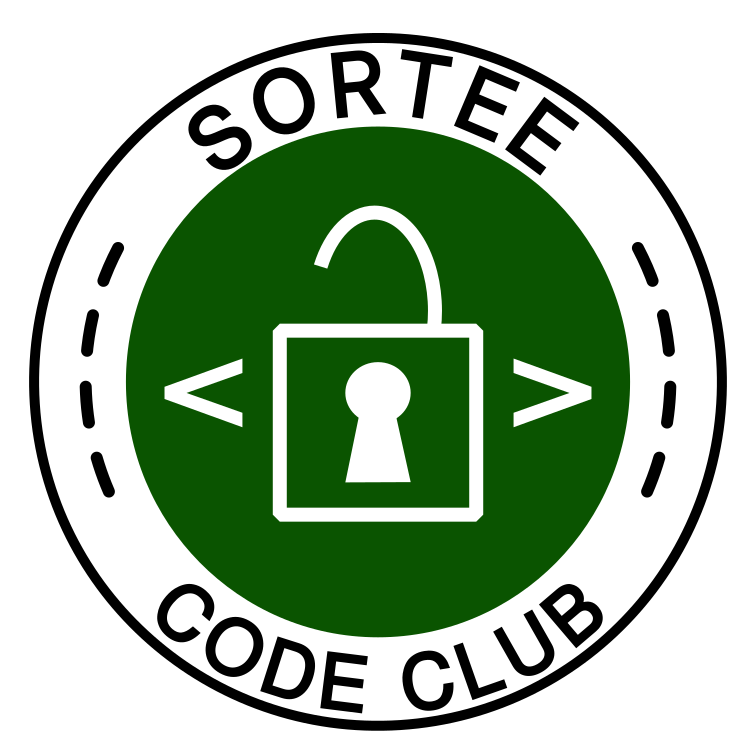
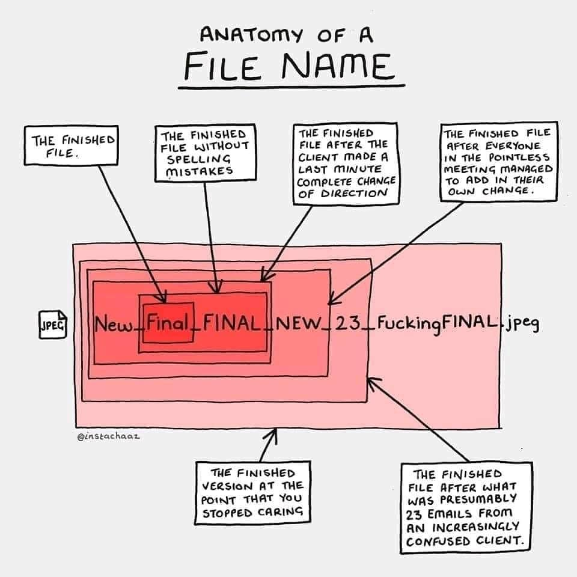
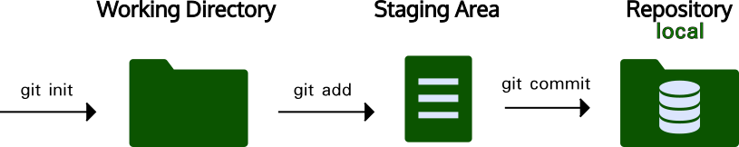
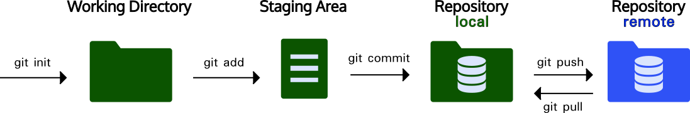
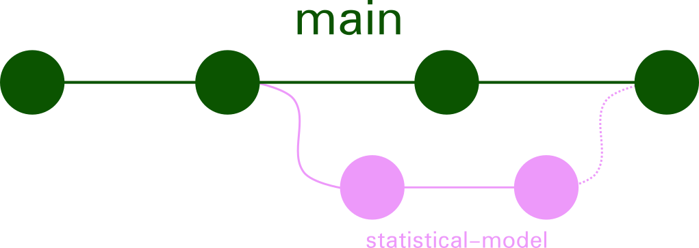
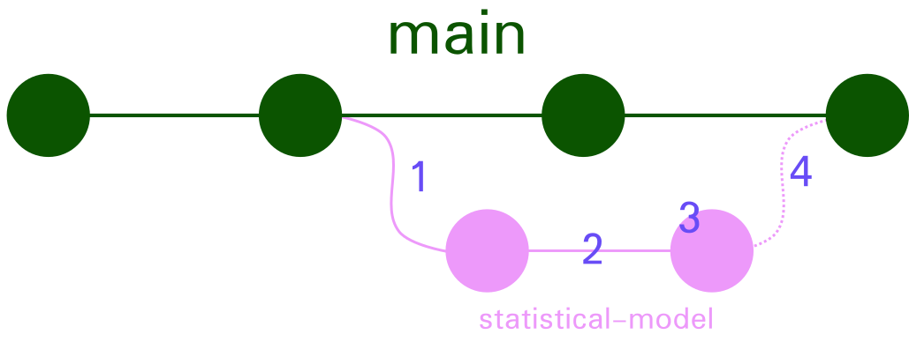
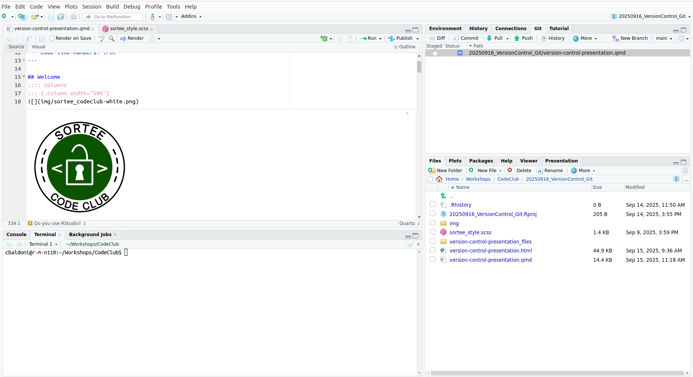
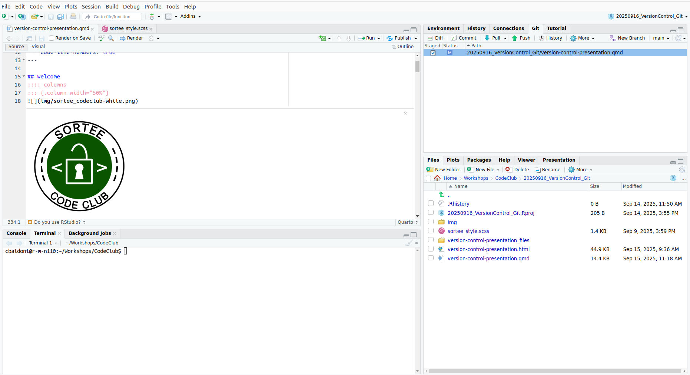
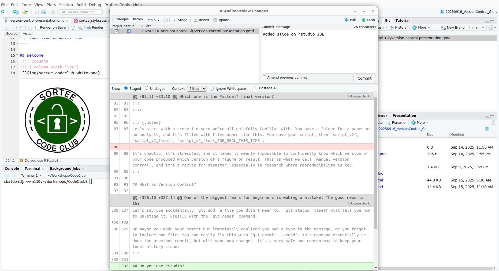

Version Control: a researcher’s guide to Git and GitHub
Welcome

- Every third Tuesday of the Month
- Topics and schedule here: SORTEE Code Club Schedule
- Do you have a topic in mind? Write us!
About Code Club
SORTEE Code Club is an online meeting where people come together to learn, share, and collaborate on coding-related topics in an informal and supportive environment
SORTEE Resources
Do you know about SORTEE Resources?
Today’s Agenda
Goal for the next 60 minutes:
Understand how version control can make your research more robust, reproducible, and less stressful.
Why Bother? The Familiar Problem

How do you track changes over time?
Which one is the actual final version?
What is Version Control?
It’s like “Track Changes” for your entire project folder.
- Not just for one file, but for your code, manuscripts, figures, and data files.
- It creates a complete, browsable history of your project.
- You decide when to save a “snapshot” (a commit) of your work.
A game-changer for research
- Reproducibility: Anyone (including “future you”) can retrieve the exact version of the code used to generate a result.
- Collaboration: Simplifies working with others without emailing files back and forth.
- Peace of Mind: Freely experiment with new ideas. If you mess up, you can always rewind to a version that worked.
- A Clear History: Understand why changes were made over time.
The big difference: Git vs. GitHub
Git is the TOOL
- Software on your computer.
- It does the actual tracking.
- It’s the engine.
- You can use Git 100% offline without ever needing GitHub.
GitHub is the PLACE
- A website/service to host your Git projects (repositories).
- For backup, sharing, and collaboration.
- Think of it as Dropbox or Google Drive, but supercharged for code.
You use Git locally, and you can optionally push your work to GitHub.
GitHub is not the only Place!
Popular Alternatives:
- GitLab: Very popular in academia and enterprise. Powerful built-in features for the entire software lifecycle
- Bitbucket: Made by Atlassian, integrates tightly with tools like Jira
- Self-Hosted: Your university or research institute might host its own GitLab or Gitea server for better data privacy and control.
Core Workflow
- Working Directory: Your normal files and folders
- Staging Area: The waiting room. You add files here (
git add) to tell Git, “include this changes” - Repository: The permanent history. You save the changes (
git commit) from the staging area into your project’s history
Bigger picture? Adding a Remote
- Remote: A version of your repository hosted on a server (like GitHub)
git pull: Fetches changes from the Remote Repo to your Local Repo (essential for collaboration)git push: Sends your committed changes from your Local Repo to the Remote Repo
The local (Git) workflow
Commands and the preferred order:
git init: Turn a folder into a Git repository.git status: Check the state of our three areas.git add <filename>: Move a file to the Staging Area.git commit -m "Your message": Save the snapshot to the Repository.git log: View the project’s history.
Branching
Branching: workflow

- Create a branch:
git branch statistical-model - Commit changes:
git addandgit commit - Review your changes
git checkout mainandgit diff - Merge
Branching Github
- Create a branch
- Commit changes
- Open Pull Request - Review Pull Request
- Merge
Writing a good commit message

A commit message is a note to your future self and collaborators.
Why it matters: git log becomes a readable story of your project’s evolution.
- Bad:
git commit -m "stuff" - Better:
git commit -m "Fix bug in statistical calculation"
Oops, I made a mistake!
What if you staged the wrong file or made a typo in your last commit? Git is forgiving!
- To un-stage a file:
- You used
git add bad_file.Rbut didn’t mean to. - Use
git reset HEAD bad_file.Rto move it back to your Working Directory.git statuswill guide you!
- You used
- To fix your last commit message:
- Made a typo?
git commit --amend -m "A corrected message" - Forgot a file?
git add forgotten_file.Rthengit commit --amend.
- Made a typo?
This is a safe way to fix local mistakes before you push them to GitHub.
Do you use RStudio?
Everything is simpler, then!
No need to hard code, you can use the IDE!
git status

git add
git diff --staged

git commit -m "Message"
.gitignore: What to Leave Out
You don’t want to track everything!
- A plain text file named
.gitignoretells Git which files or folders to ignore.
You should ignore:
- Large data files (use a data repository instead).
- Sensitive information (e.g. patient data, API keys).
- Files generated by your code (e.g. plots, intermediate results).
- System files (e.g.
.DS_Store,Thumbs.db,.RData,.Renviron).
Open Science Bonus: Get a DOI!
Services like Zenodo can link to your GitHub repository.
- You do your research and
git pushto GitHub. - You “release” a version on GitHub.
- Zenodo archives that version and gives you a citable DOI.
This makes your software and analysis a first-class, citable research output!
Where to Go From Here?